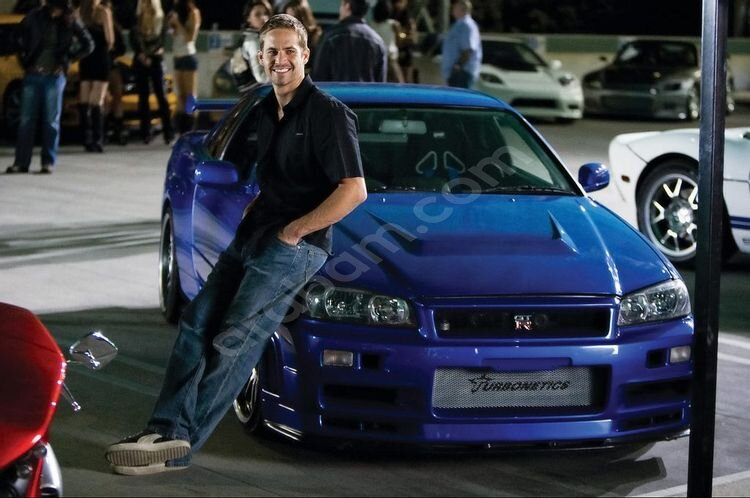

<!DOCTYPE html>
<html lang='en'></html>
<head>
 <title id='title'>Paul Walker</title>
 <meta charset='UTF-8'>
 <link rel='stylesheet' href='./a.css'>
</head>
<body>
 <main id='main'>
   <div class='heading'>
     <h1>Paul Walker<H1>
 <figure id='img-div'> 
   
 </figure>
 <div id='tribute-info'> <h3>Journey Of Paul Walker </H3>
      <ul>
        <li>Walker was born on September 12, 1973 in Glendale, California.</li>
        <li>Completed higher education in Village christian school</li>
        <li>Walker began a modelling career as a toddler, starring in a television commercial for Pampers at age two</li>
        <li>In 2001, Walker's breakthrough role was starring opposite Vin Diesel in the action film The Fast and the Furious;</li>
        <li>Raised as a member of The Church of Jesus Christ of Latter-day Saints,</li>
        <li>Walker starred in the critically successful thriller Joy Ride (2001)</li>
        <li>The film became the highest-grossing film in the franchise up until that point.</li>
        <li>Signing the Office of Profit Bill was the toughest decision he had taken during his tenure</li>
        <li>Walker had an interest in marine biology, and joined the board of directors of The Billfish Foundation in 2006.</li>
        <li>He held a brown belt in Brazilian jiu-jitsu under Ricardo "Franjinha" Miller at Paragon Jiu-Jitsu</li>
        <li>He traveled to a number of disaster-stricken areas to supply aid until his death.</li>
        <li>Walker was also set to play Agent 47 in the film adaptation Hitman: Agent 47 (2015), but died before production began</li>
        <li>Walker also had a large car collection of about 30 cars, a portion of which he co-owned along with Rodas.</li>
        <li>In January 2020, twenty-one vehicles owned by Walker were sold for a combined $2.33 million during spirited bidding at an annual car auction in Arizona</li>
        <li> the car crashed into a concrete lamp post and two trees, catching fire</li>
        <li>With Furious 7 in the middle of filming at the time of Walker's death</li>
        <li>But he still lives in the heart of every Car Enthusiast</li>
     </ul>
    <section id='wikientry'> <H4>if speed kills me don't cry because i was smiling<a id='tribute-link' href='https://en.wikipedia.org/wiki/Paul_Walker' target='_blank'> Wiki entry<a> </section>
 </main>
</body>